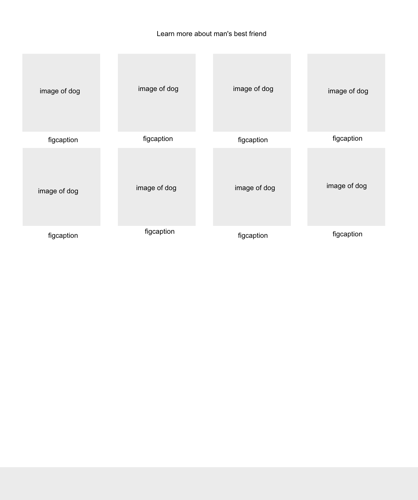

What: Content is arranged into a grid like structure. Each item should carry the same visual weight, as in one item should not overpower the other visually. Each item should also follow the same
When: Typically a grid will be used with news artices, blog posts, products, etc. All the items are of similiar importance, and you want the user to overlook the entire grid and have a plethora of items to select and view.4
Why: A grid stucture signifies to the user that each item carries similar significance. The grid structure also signifies that each item is similiar in terms of content to one another. All work together to create a meaningful visual heiarchy that should align with the meaning of the website. Grids are also aesthically pleasing, and may suit certain styles of websites
How: Determine the layout of each item on the grid. Depending on whether or not their are graphics, headlines, subtitles, links, etc. all need to be taken into consideration when laying out the content. Experiment with style, playing with different fonts, colors, etc. all help convey information in a limited space. Then begin to arrange, decide the layout whether a grid or a matrix. One must also take into consideration, how the grid will look on different devices. One might also consider, how they want to highlight certain items, whether through adding animation, or statically. However, when adding emphasis to content one shouldn't change the size, positons, or other inherit structure as it disrupts the user exeperience.
Design Prototype: Grids of Equals 